represent a change (set/unset/move) in the left side model of the comparison.
represent a change (set/unset/move) in the left side model of the comparison.
Version hudson-PLATFORM=luna-29
Marketplace Client
Using the bundled Eclipse marketplace client you can install EMF Compare in one click. Just type "emf compare", click on search, and then on install.
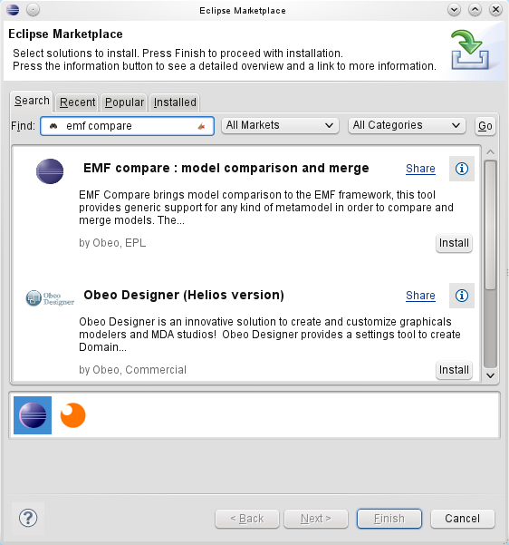
Update Site
EMF has been part of the Eclipse release train since Galileo, you can install it using the following update sites, depending on your platform. Note that the following are not meant to be visited in your internet browser; they must be pasted in the Help > Install New Software dialog of your Eclipse, as p2 repositories.
http://download.eclipse.org/releases/juno http://download.eclipse.org/releases/indigo http://download.eclipse.org/releases/helios http://download.eclipse.org/releases/galileo
The Download page lists more specific update sites if you wish to try one of the latest integration builds.
Compatibility
Please note that the EMF Compare development team does its best to maintain downward compatibility towards Galileo (Eclipse 3.5). Following is the compatibility chart :
| EMF Compare | Eclipse 4.3 - EMF 2.9 | Eclipse 4.2 - EMF 2.8 | Eclipse 3.8 - EMF 2.8 | Eclipse 3.7 - EMF 2.7 | Eclipse 3.6 - EMF 2.6 | Eclipse 3.5 - EMF 2.5 | Eclipse 3.4 - EMF 2.4 | Eclipse 3.3 - EMF 2.3 | Eclipse 3.2 - EMF 2.2 |
|---|---|---|---|---|---|---|---|---|---|
| 2.1 | |||||||||
| 2.0 | |||||||||
| 1.3 | |||||||||
| 1.2 | |||||||||
| 1.1 | |||||||||
| 1.0 |
An empty cell indicates that the compatibility hasn't been tested for a particular combination.
The main points of interest are highlighted in the following picture :
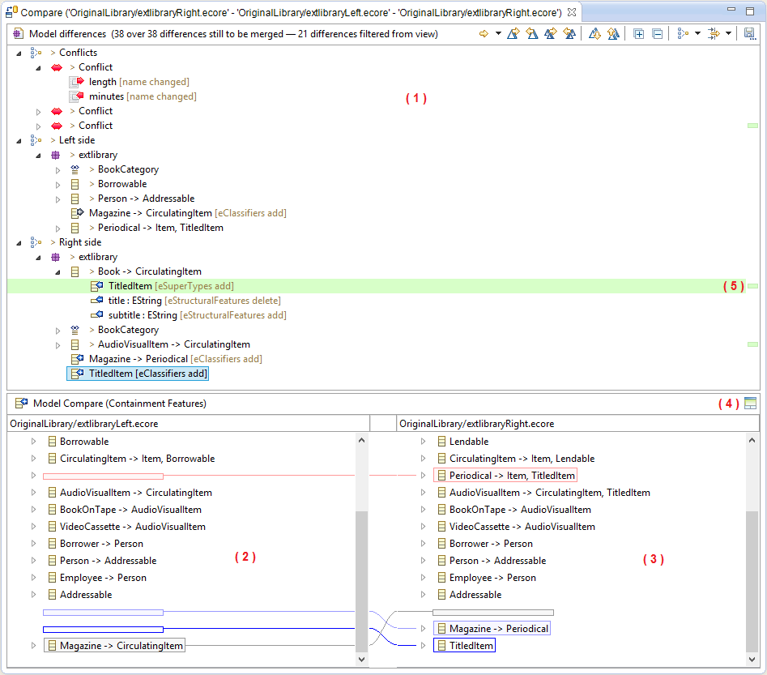
The toolbar displays the current status of the comparison and allows you to act on differences.
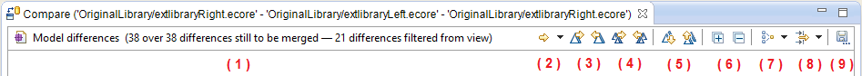
When you compare models with one in a read-only mode, some of actions proposed by the toolbar are slightly different. Indeed, if you compare a model with the local history, or you compare a model with a remote model stored in a repository, the latter is in a read-only mode. You will not able to merge differences to this read-only model. You will only accept or reject changes for your local model.
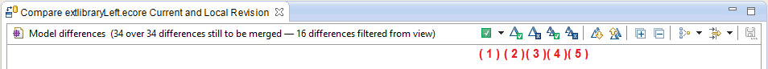
When you run a comparison involving two models (a 2-way comparison), the icons associated with differences are:
represent a change (set/unset/move) in the left side model of the comparison.
When you run a comparison involving three models (a 3-way comparison), the icons associated with differences are:
 incoming differences are changes that were made in the right-side/remote model since common ancestor.
incoming differences are changes that were made in the right-side/remote model since common ancestor.
 outgoing differences are changes that were made in the left-side/local model since common ancestor.
outgoing differences are changes that were made in the left-side/local model since common ancestor.
 represent an incoming deletion difference.
represent an incoming deletion difference.
 represent an outgoing addition difference.
represent an outgoing addition difference.
 represent an outgoing deletion difference.
represent an outgoing deletion difference.
The merged differences are displayed in gray and have a distinct icon.
When you compare models with one in a read-only mode, the icons are:
Once installed, you can compare your files (locally or from any Version Control System) as usual using the Compare With menu.
You can compare two or three models by selecting them and then using the Compare With > Each Other menu:
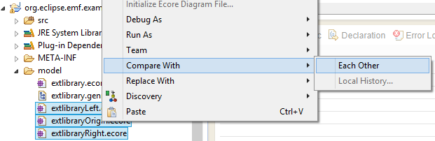
If you run a 3-way comparison (with 3 models), you have to select the ancestor of the comparison:
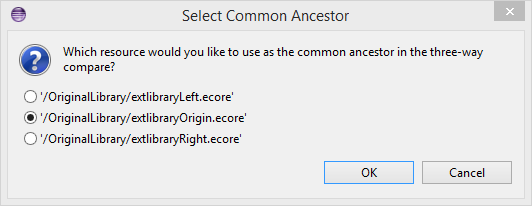
You can also compare your local model with one of its previous version available in the local history. For that, use the Compare With > Local History menu:
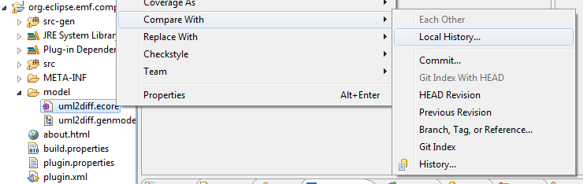
The following displays the important part of a model life cycle with regards to the comparison. The full life cycle can be followed on Sample Use Case
For this test, we'll suppose that you are trying to use EMF Compare on UML models shared under git. This will not go in details about UML and Git. We'll assume that you know how to manipulate an UML model, create or clone a git repository, share a project under it and use standard Git operations.
The name of our sample project will be "library". It contains a single folder "model" containing two models :
The model itself is a very simple library. Graphically speaking :
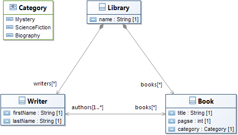
We commit this initial file as the original model. We then slightly modify it so that it now looks like :
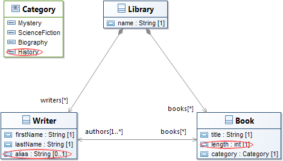
But how do we know exactly what changed? Let's compare this with the file from the Git Index :
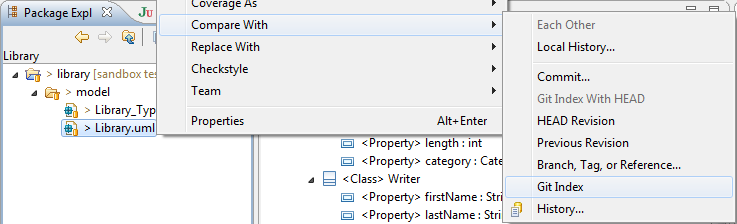
This will open a comparison editor. Let's select one of the differences displayed on its top half :
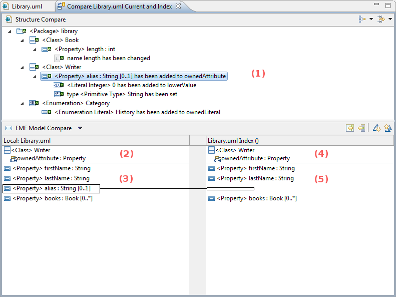
In this case, it is possible to merge towards the right : the index version of the model is editable, like any other file in the index. If we merge this difference towards the right, then it will exist an unstaged version of the model, and a staged version of the model, that will include the merged difference.
But this comparison with index is mainly useful in order to determine exactly what changed in our version. Let's commit our changes on the master branch.
After that, our model can evolve, and evolve separately in multiple branches. Let's consider the case where we would have a master branch differing from a borrowables branch such as the two look like this (the branching point was the model we've already displayed above) :
| Master | Borrowables |
|---|---|
| 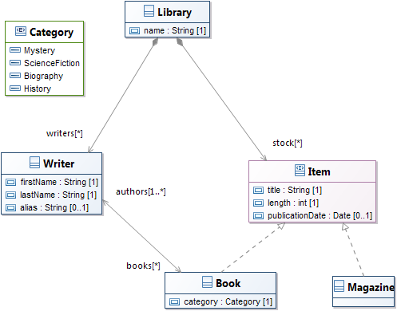 | 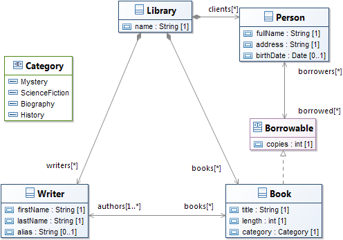 |
Before we continue working on our Borrowables branch, we'd like to retrieve all modifications that have been pushed to master. With the "Borrowables" branch checked out, we'll use the Compare With > Branch, Tag or Reference action :
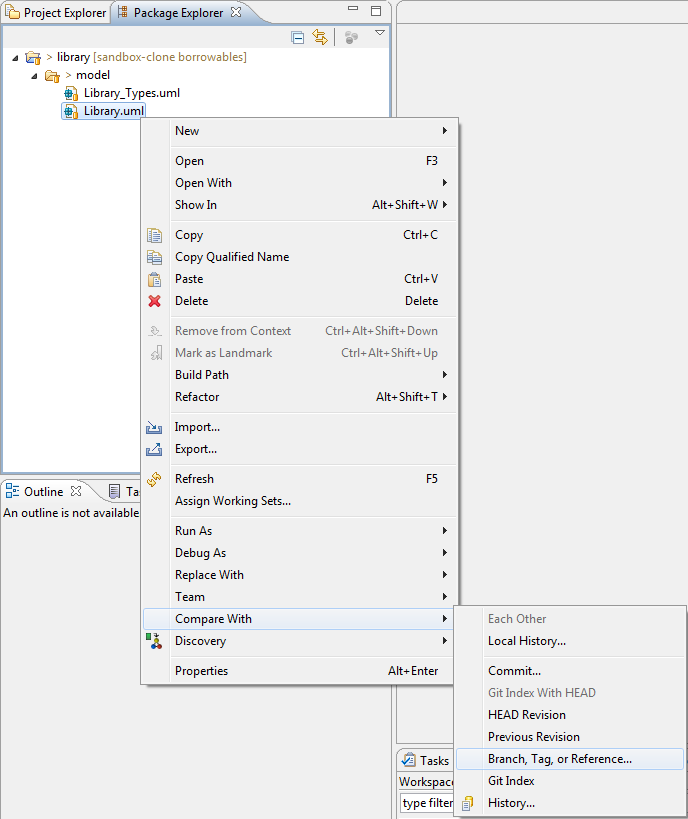
and compare with master :
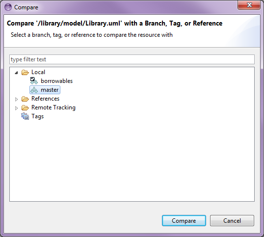
This shows us all differences between our local copy and the master branch that were made since the 'branching' point.
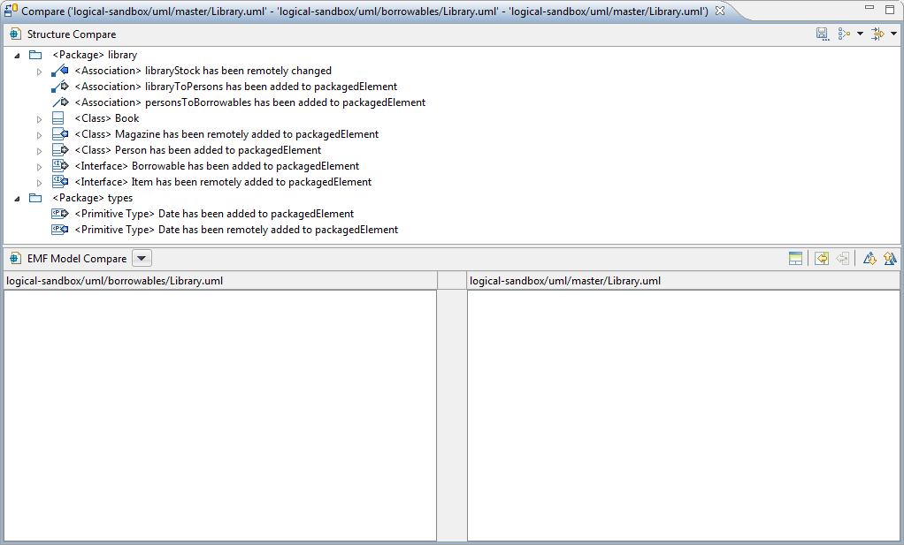
Same as previously, you can navigate through the differences via the top panel, the structural view. There are three main kind of elements displayed here. Regular elements, that mimic the containment tree of your input models, are there to separate the various differences and let you know where they were actually detected. Then there are incoming differences, decorated with a blue arrow ( ) or a derived icon, and outgoing differences decorated with a gray arrow ( ) or a derived icon.
Incoming differences are changes that were made in the remote branch (here, master) since the branching point (common ancestor). Outgoing differences are changes taht were made in the local copy (here, the borrowables branch) since the branching point.
There are no conflicts here, since UML uses computed identifiers (XMI ID) for the model elements. Thus, what looks like a conflict (the "Date" type that's been added on both branch in the types packages) is actually two distinct differences.
The interface also lets you display the common ancestor of both models through the icon. For example, if we select the Book class, we can see how it looks like on all three versions :
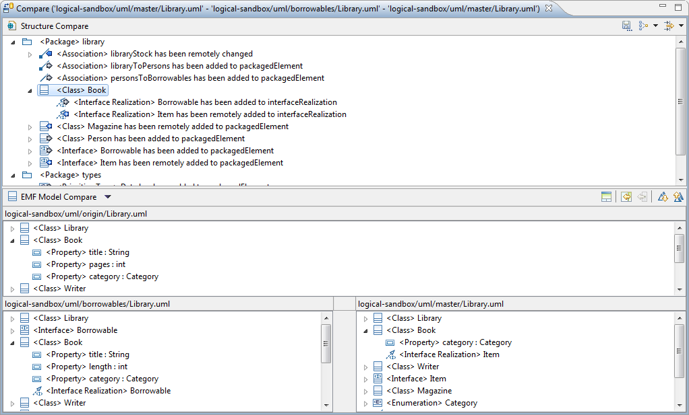
You can navigate through the differences using the appropriate actions, either the previous ( ) or the next ( ) difference.
The remaining two actions are those that actually interest us here we can either accept all non-conflicting differences to the local copy through or accept them one after the other through .
Accept all differences is not what we seek : we want to keep the changes we made locally, not revert them to the state they had before the branching point (which is their current state on master, the right side). We will then select all incoming differences (under the Right side node) one after the other and merge them one by one. This gives us our merged model :
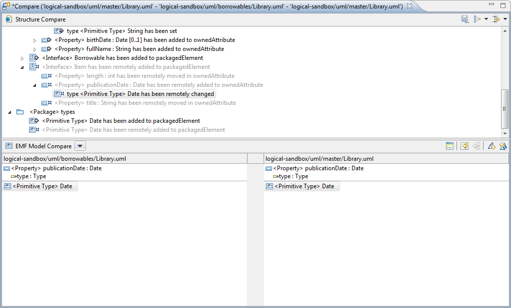
This feature allows you to group differences together in the structural view according to a set predicate. By default, EMF Compare provides three distinct grouping strategies :
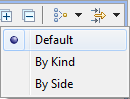
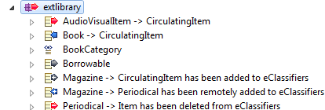
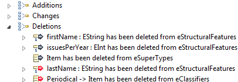
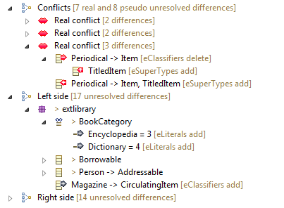
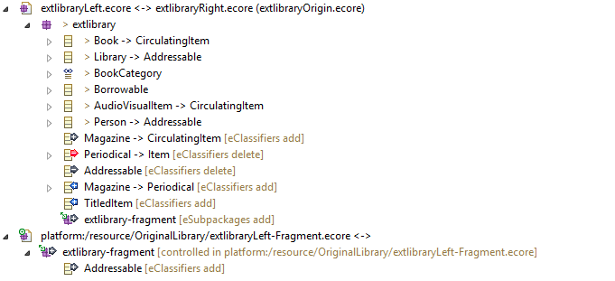
PENDING UPDATE, this is a demo displaying EMF Compare 1.3 Demo
PENDING : New grouping strategies can be provided to EMF Compare through extension points.
This features allows you to filter differences out of the structural view according to a set predicate. By default, EMF Compare provides five distinct filters :
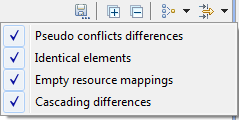
PENDING UPDATE, this is a demo displaying EMF Compare 1.3 Demo
PENDING : New filters can be provided to EMF Compare through extension points.
When a 3-way comparison has conflicts, all differences involved in the same conflict are grouped under a Confict node.
In the following case, the Employee Green has his manager reference in conflict. The left side of the comparison shows that the manager of the Employee Green is the employee Smith while the right side side shows that the manager is the Employee Johnson. The consequences of a merge from right to left of the selected difference are displayed.
When the left side difference Employee Smith [ manager changed ] is selected in the top panel, the right side difference Employee Johnson [ manager changed ] is highlighted in red, that means if the the left side difference Employee Smith [ manager changed ] is merged from right to left, then it will be impossible to merge the right side difference Employee Johnson [ manager changed ] from left to right.
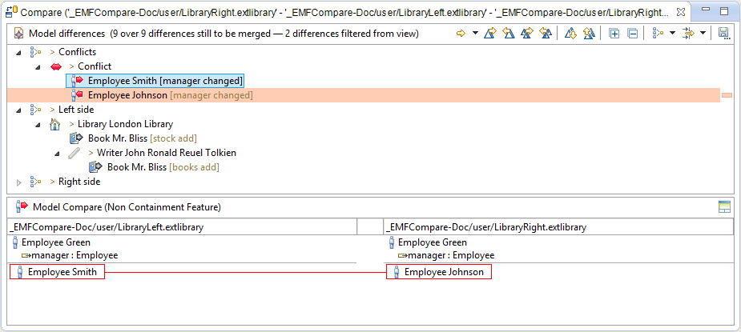
After the merge of the left side difference from right to left Employee Smith [ manager changed ], the right side difference Employee Johnson [ manager changed ] is not "mergeable" from left to right anymore, it has been merged from right to left automatically.
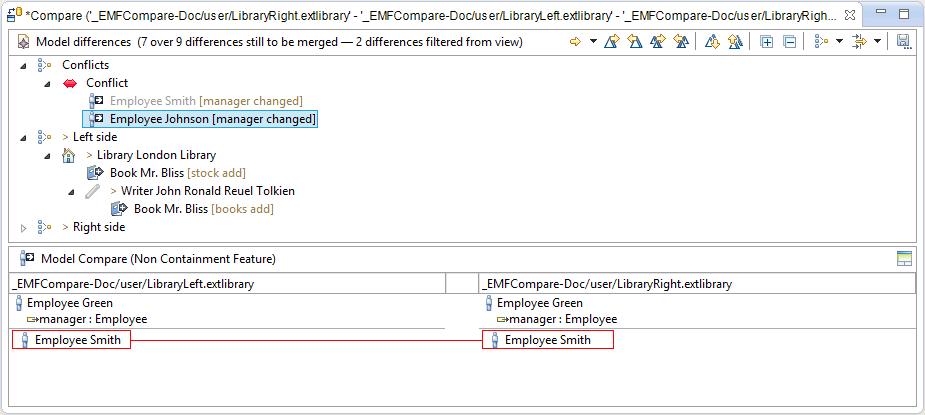
In case of differences made on String-typed attributes, specifics actions are available in the top-right of the content viewer panel.
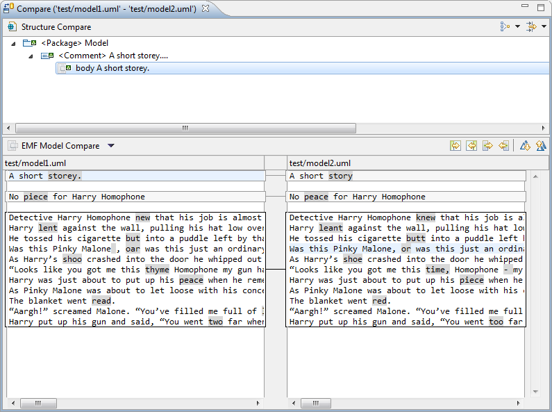
PENDING UPDATE, this demo displays EMF Compare 1.3 Demo
EMF compare provides the ability to compare models with Papyrus graphical modeler (GMF Diagrams). To get the graphical comparison, the EMF Compare Papyrus integration feature and Papyrus have to be installed. The graphical comparison will be launched if you compare diagrams files (.di), or if you compare models that have diagrams associated in the same folder. In the same way as the semantic model comparison, the graphical model comparison uses the same color coding, to distinguish incoming and outgoing changes, and conflicts. To put in relief the graphical differences, some decorators are used:
The color of the concerned decorators are highlighted on selection of the difference.
In the following example, a 3-way comparison is run with UML class diagrams. We can see that a Shape associated to a semantic uml class named A has been added on the left side of the comparison. After selected the difference in top panel, we can see the concerned elements in down panels. In the left part, the Shape A is highlighted in gray because it is an incoming change. In the right part, a phantom is drawn at the place the Shape should be after merging from right to left.
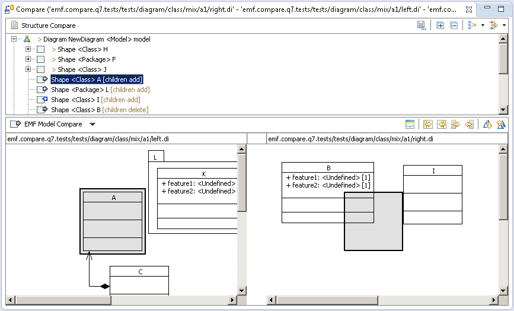
About phantoms (place-holders):
To ease their readability, in some cases, their context have to be displayed:
They are drawn as:
Here is an example of nested phantom:
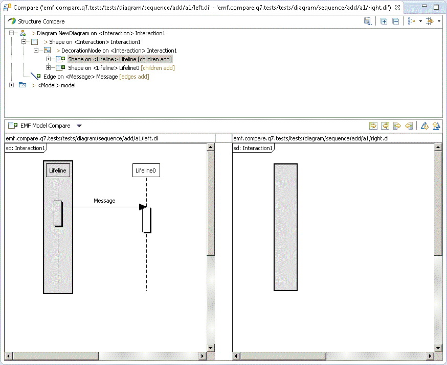
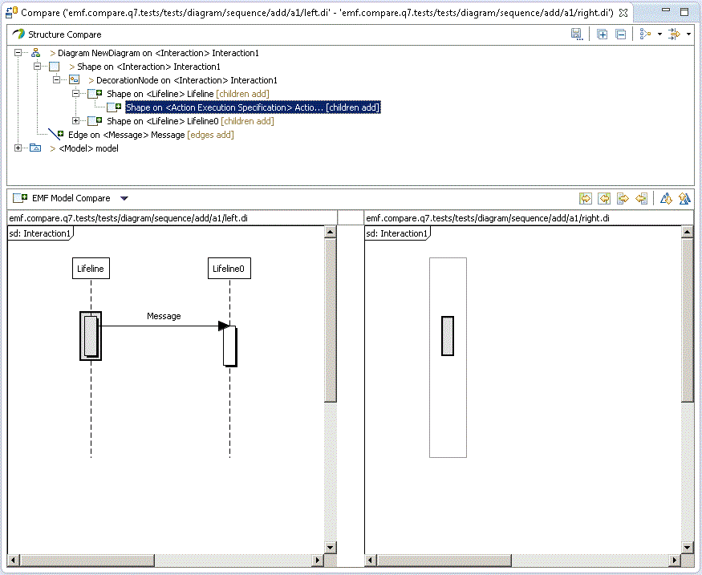
Have a look on the following demos :
PENDING update videos
Demo : Comparing Ecore files with diagrams
Demo : Comparing UML files with diagrams
EMF Compare does not act simply on the selected files, but on their whole logical model (a given model can be split through multiple files through EMF control action). Thanks to that, if you try and compare a model file that reference other model files, the comparison will still be able to take these "other" files into account. For example, if you try and compare a genmodel file (that depends on its underlying ecore file) :
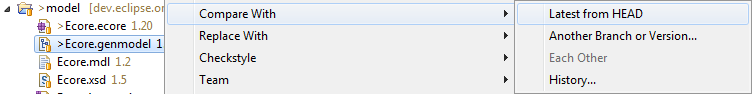
EMF Compare will actually consider both files when comparing :
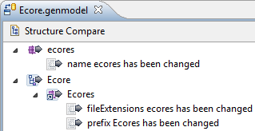
PENDING UPDATE Demo
A specific work has been done with EMF Compare for UML. It consists in an additionnal filter named UML refined elements. This filter is active by default when a comparison involves UML resources.
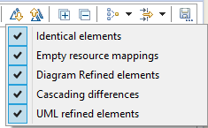
The filter groups UML consistant differences together in one difference. For example, a UML association is modeled by an association element and several sub-elements:
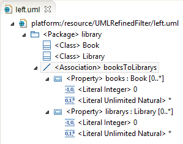
If EMF Compare detects a change on an element of type association, it will group all changes on the sub-elements of the assocation to the association difference. The goal of this filter is to ease the merge of differences. Indeed, all you have to do is to merge the association difference and it will merge all the sub-differences with it.
Here is the comparison of two UML model, one with an association (the left side), another whithout (the right side). The UML refined elements filter has been deactivated:
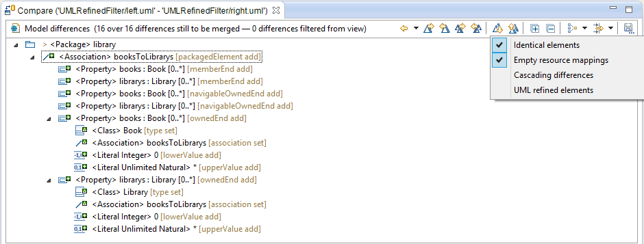
We can see a lot of differences. The same comparison with the UML refined elements filter activated:
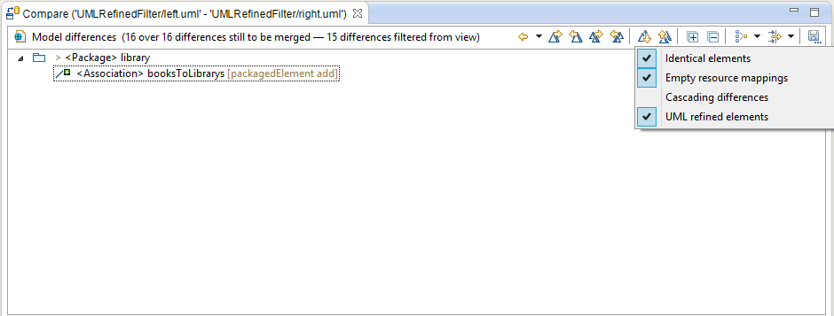
PENDING
Demo : Specific support to encapsulate profiles and stereotypes diffs
Project names should match their location
If you need to compare models that:
Due to Bug 354801, we cannot properly support models that are located in Eclipse projects which identifier is distinct from their containing folder, case included. For example, if you have a project named EcoreModels, it must be contained in a folder named EcoreModels. Any other name, even if changing only the case, such as ecoreModels, will cause issues when comparing fragmented models (or any model which references another).
Note that this only applies to comparisons launched from within Eclipse, which would trigger the opening of the EMF Compare user interface.
Symptoms vary, but they often include a NullPointerException somewhere in EMFSynchronizationModel such as :
Caused by: java.lang.NullPointerException at org.eclipse.emf.compare.ide.ui.logical.RevisionedURIConverter.<init>(RevisionedURIConverter.java:108) at org.eclipse.emf.compare.ide.ui.logical.EMFSynchronizationModel.resolveTraversal(EMFSynchronizationModel.java:464) at org.eclipse.emf.compare.ide.ui.logical.EMFSynchronizationModel.createSynchronizationModel(EMFSynchronizationModel.java:165) at org.eclipse.emf.compare.ide.ui.internal.structuremergeviewer.EMFCompareStructureMergeViewer.compareInputChanged(EMFCompareStructureMergeViewer.java:258)
The models should be imported within the workspace
Trying to compare models that are not present in the current Eclipse workspace from either the Git repositories perspective, or from the Git Staging view.
Note that this only applies to comparisons launched from within Eclipse, which would trigger the opening of the EMF Compare user interface.
Symptoms are mostly the same here as they would be with the limitation mentionned above regarding project names, and they usually include the same NullPointerException:
Caused by: java.lang.NullPointerException at org.eclipse.emf.compare.ide.ui.logical.RevisionedURIConverter.<init>(RevisionedURIConverter.java:108) at org.eclipse.emf.compare.ide.ui.logical.EMFSynchronizationModel.resolveTraversal(EMFSynchronizationModel.java:464) at org.eclipse.emf.compare.ide.ui.logical.EMFSynchronizationModel.createSynchronizationModel(EMFSynchronizationModel.java:165) at org.eclipse.emf.compare.ide.ui.internal.structuremergeviewer.EMFCompareStructureMergeViewer.compareInputChanged(EMFCompareStructureMergeViewer.java:258)
Part of EMF Compare Documentation
Version hudson-PLATFORM=luna-29
Last updated Mon Jan 20 05:10:34 EST 2014